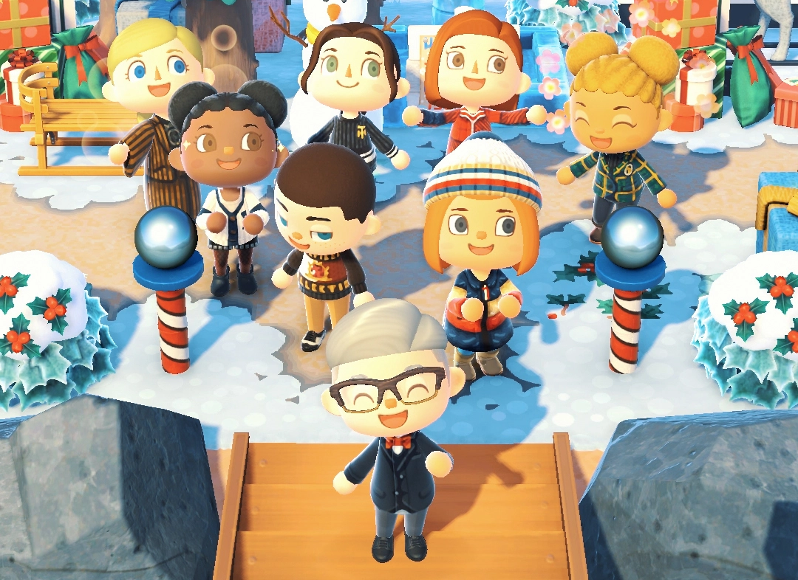
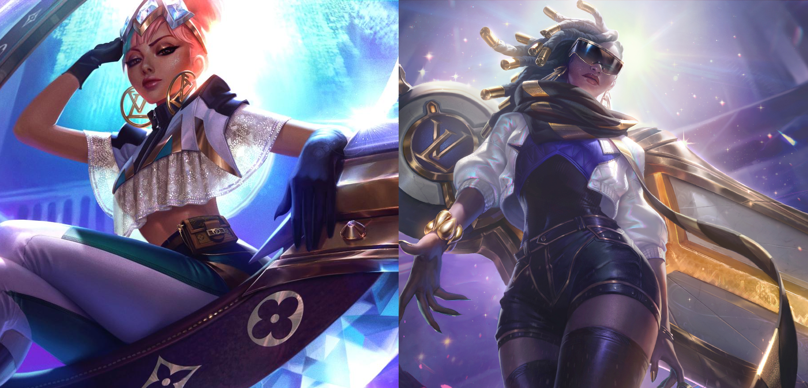

Video Games and How It Fashioned the Way We Style
by Cloe Angelica Gorgonio
Fashion has been a staple in showing off one’s style for centuries, always going in-line with what is considered hip and trendy. But these days, video games are what’s hip and trendy. And with that, fashion styles seem to follow suit, and find ways to innovate. But sometimes you have to wonder, how did fashion get its influence from video games?
Before we can answer that question, we must first go back in time. Earlier video games didn’t have the fancy graphics they have now, of course, due to the limitations of technology at the time. The most that they could do was to try and create images in 8-bit, and even then that was a huge advancement from the blocky black and white graphics of Pong and such from years earlier. Due to these limitations, character designers had to get creative. The result was a set of characters, whose fashion were simplified but iconic, like Mario, Link, and Mega man for example. But these days, video game graphics have improved to a great extent.
With better graphics means more elaborate designs, and in turn fashion, for characters. But character designers weren’t the only ones deciding on how a character should look like, for that, we should turn to character creation, or customization. As the name suggests, players get to create or customize their characters so that it suits their interests. Players get to mix and match different clothing of different styles, from casual, to retro, to punk, to gothic, to even armor, in order to create outfits of their own. But what if you want your character to wear something you can buy yourself in real life? Fortunately, you can do just that!
Animal Crossing: New Horizons is the latest installment of the Animal Crossing series, and became one of the most beloved Nintendo Switch game titles when the pandemic hit. The game had a certain feature, being the so-called “Custom Designs” app on the player’s NookPhone, that allowed them to create new clothes and items, and share their works online. Because of the popularity of the feature, real-world luxury clothing brand Tommy Hilfiger hopped into the virtual space, providing players with exclusive in-game apparel. But this isn’t the first time a real clothing brand found its way into becoming a purchasable in-game item.

The Sims is a series of life simulation games that had its start in 2000b but we’re going to focus on is the 2nd main installment of the series, The Sims 2, released in 2004. In 2007, the game had a collaboration with H&M, and released the H&M Stuff Pack which contained H&M clothing for the players’ “sims” to wear, to go along with the real life H&M clothes they can buy for themselves. This isn’t the only time The Sims collaborated with a real-world clothing brand, as over a decade later in 2019, they collaborated with Moschino to release the Moschino Stuff Pack for The Sims 4.
This trend even continued into the year 2021, when the 2013 online installment of the Grand Theft Auto series, Grand Theft Auto Online, brought more real-world clothing brands to the digital space. Brands Civilist, that’s known for their skateboarding gear but also sold clothes, and MISBHV also provided in-game streetwear for players to deck themselves out in.
But what about skins? In late 2019, luxury brand Louis Vuitton collaborated with one of the most popular MOBA games of the last decade, League of Legends. From this collaboration came 2 new prestiges skins for champions Qiyana and Senna, in order to commemorate the 2019 League of Legends World Championship Finals, that was held in Paris. Along with the skins was a one-of-a-kind trophy travel case, for the winners of the Summoner’s Cup, one of the most prestigious prizes in all of esports.

If video games can find their influence in fashion, fashion can find its influence in video games as well. One prime example of this is the cosplay scene. People have enjoyed dressing up as certain characters for the longest time, and that includes video game characters. Especially when you consider that the creation of cosplay items is a lucrative business. Although one doesn’t necessarily need to spend a lot of money on purchasing certain clothes in order to dress up as their favorite characters, as closet cosplays are a thing as well. Plus, one can also dress up in a fit that is inspired by any character if cosplay is too much for them.
On the side of the fashion industry, video games can be used as part of marketing. Aside from the aforementioned collaborations, brands can also post advertisements in games, or in the form of games. Take for example the Gucci Garden Experience in Roblox, or Nike’s Reactland promoting their “React” line of shoes. They can also partner up with game franchises to produce merchandise. An example of this would be Uniqlo’s Pokemon, League of Legends, Super Mario collections.
Now, to answer the initial question, how did fashion get its influence from video games? Well, to be quite frank, it just seemed like the normal progression of fashion and its trends. We’ve seen real fashion brands enter the digital world, even in games, and it was also about time that video games found their place in the fashion world. This is especially true once you bring into consideration how video games are the norm nowadays, compared to several decades ago when it was still considered a niche, or a subculture. Video game fashion was, of course, inspired by real life fashion trends, and both have come full circle in terms of fashion getting its inspiration from video games.